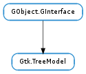

| Subclasses: | GcrUi.CollectionModel, Gtk.ListStore, Gtk.TreeModelFilter, Gtk.TreeModelSort, Gtk.TreeStore |
|---|
| filter_new([root]) | |
| foreach(func, *user_data) | |
| get(treeiter, *columns) | |
| get_column_type(index_) | |
| get_flags() | |
| get_iter(path) | |
| get_iter_first() | |
| get_iter_from_string(path_string) | |
| get_n_columns() | |
| get_path(iter) | |
| get_string_from_iter(iter) | |
| get_value(iter, column) | |
| iter_children(aiter) | |
| iter_has_child(iter) | |
| iter_n_children(iter) | |
| iter_next(aiter) | |
| iter_nth_child(parent, n) | |
| iter_parent(aiter) | |
| iter_previous(aiter) | |
| ref_node(iter) | |
| row_changed(path, iter) | |
| row_deleted(path) | |
| row_has_child_toggled(path, iter) | |
| row_inserted(path, iter) | |
| rows_reordered(path, iter, new_order) | |
| set_row(treeiter, row) | |
| sort_new_with_model() | |
| unref_node(iter) |
None
| Name | Parameters | Return | Description |
|---|---|---|---|
| row-changed | Gtk.TreePath, Gtk.TreeIter | This signal is emitted when a row in the model has changed. | |
| row-deleted | Gtk.TreePath | This signal is emitted when a row has been deleted. Note that no iterator is passed to the signal handler, since the row is already deleted. This should be called by models after a row has been removed. The location pointed to by path should be the location that the row previously was at. It may not be a valid location anymore. | |
| row-has-child-toggled | Gtk.TreePath, Gtk.TreeIter | This signal is emitted when a row has gotten the first child row or lost its last child row. | |
| row-inserted | Gtk.TreePath, Gtk.TreeIter | This signal is emitted when a new row has been inserted in the model. Note that the row may still be empty at this point, since it is a common pattern to first insert an empty row, and then fill it with the desired values. | |
| rows-reordered | Gtk.TreePath, Gtk.TreeIter, int | This signal is emitted when the children of a node in the Gtk.TreeModel have been reordered. Note that this signal is not emitted when rows are reordered by DND, since this is implemented by removing and then reinserting the row. |
Bases: GObject.GInterface
The Gtk.TreeModel interface defines a generic tree interface for use by the Gtk.TreeView widget. It is an abstract interface, and is designed to be usable with any appropriate data structure. The programmer just has to implement this interface on their own data type for it to be viewable by a Gtk.TreeView widget.
The model is represented as a hierarchical tree of strongly-typed, columned data. In other words, the model can be seen as a tree where every node has different values depending on which column is being queried. The type of data found in a column is determined by using the GObject.Type system (ie. GObject.TYPE_INT, #GTK_TYPE_BUTTON, GObject.TYPE_POINTER, etc). The types are homogeneous per column across all nodes. It is important to note that this interface only provides a way of examining a model and observing changes. The implementation of each individual model decides how and if changes are made.
In order to make life simpler for programmers who do not need to write their own specialized model, two generic models are provided — the Gtk.TreeStore and the Gtk.ListStore. To use these, the developer simply pushes data into these models as necessary. These models provide the data structure as well as all appropriate tree interfaces. As a result, implementing drag and drop, sorting, and storing data is trivial. For the vast majority of trees and lists, these two models are sufficient.
Models are accessed on a node/column level of granularity. One can query for the value of a model at a certain node and a certain column on that node. There are two structures used to reference a particular node in a model. They are the Gtk.TreePath and the Gtk.TreeIter`Here, iter is short for iterator. Most of the interface consists of operations on a :class:`Gtk.TreeIter.
A path is essentially a potential node. It is a location on a model that may or may not actually correspond to a node on a specific model. The Gtk.TreePath struct can be converted into either an array of unsigned integers or a string. The string form is a list of numbers separated by a colon. Each number refers to the offset at that level. Thus, the path 0 refers to the root node and the path 2 :4 refers to the fifth child of the third node.
By contrast, a Gtk.TreeIter is a reference to a specific node on a specific model. It is a generic struct with an integer and three generic pointers. These are filled in by the model in a model-specific way. One can convert a path to an iterator by calling Gtk.TreeModel.get_iter (). These iterators are the primary way of accessing a model and are similar to the iterators used by Gtk.TextBuffer. They are generally statically allocated on the stack and only used for a short time. The model interface defines a set of operations using them for navigating the model.
It is expected that models fill in the iterator with private data. For example, the Gtk.ListStore model, which is internally a simple linked list, stores a list node in one of the pointers. The Gtk.TreeModelSort stores an array and an offset in two of the pointers. Additionally, there is an integer field. This field is generally filled with a unique stamp per model. This stamp is for catching errors resulting from using invalid iterators with a model.
The lifecycle of an iterator can be a little confusing at first. Iterators are expected to always be valid for as long as the model is unchanged (and doesn’t emit a signal). The model is considered to own all outstanding iterators and nothing needs to be done to free them from the user’s point of view. Additionally, some models guarantee that an iterator is valid for as long as the node it refers to is valid (most notably the Gtk.TreeStore and Gtk.ListStore ). Although generally uninteresting, as one always has to allow for the case where iterators do not persist beyond a signal, some very important performance enhancements were made in the sort model. As a result, the Gtk.TreeModelFlags.ITERS_PERSIST flag was added to indicate this behavior.
To help show some common operation of a model, some examples are provided. The first example shows three ways of getting the iter at the location 3 :2:5. While the first method shown is easier, the second is much more common, as you often get paths from callbacks.
Acquiring aGtkTreeIter
/&ast Three ways of getting the iter pointing to the location &ast/
GtkTreePath *path;
GtkTreeIter iter;
GtkTreeIter parent_iter;
/&ast get the iterator from a string &ast/
gtk_tree_model_get_iter_from_string (model, &iter, "3:2:5");
/&ast get the iterator from a path &ast/
path = gtk_tree_path_new_from_string ("3:2:5");
gtk_tree_model_get_iter (model, &iter, path);
gtk_tree_path_free (path);
/&ast walk the tree to find the iterator &ast/
gtk_tree_model_iter_nth_child (model, &iter, NULL, 3);
parent_iter = iter;
gtk_tree_model_iter_nth_child (model, &iter, &parent_iter, 2);
parent_iter = iter;
gtk_tree_model_iter_nth_child (model, &iter, &parent_iter, 5);
This second example shows a quick way of iterating through a list and getting a string and an integer from each row. The populate_model function used below is not shown, as it is specific to the Gtk.ListStore. For information on how to write such a function, see the Gtk.ListStore documentation.
Reading data from aGtkTreeModel
enum
{
STRING_COLUMN,
INT_COLUMN,
N_COLUMNS
};
...
GtkTreeModel *list_store;
GtkTreeIter iter;
gboolean valid;
gint row_count = 0;
/&ast make a new list_store &ast/
list_store = gtk_list_store_new (N_COLUMNS, G_TYPE_STRING, G_TYPE_INT);
/&ast Fill the list store with data &ast/
populate_model (list_store);
/&ast Get the first iter in the list, check it is valid and walk
&ast through the list, reading each row. &ast/
for (valid = gtk_tree_model_get_iter_first (list_store, &iter);
valid;
valid = gtk_tree_model_iter_next (list_store, &iter))
{
gchar *str_data;
gint int_data;
/&ast Make sure you terminate calls to gtk_tree_model_get()
&ast with a '-1' value
&ast/
gtk_tree_model_get (list_store, &iter,
STRING_COLUMN, &str_data,
INT_COLUMN, &int_data,
-1);
/&ast Do something with the data &ast/
g_print ("Row &percntd: (&percnts,&percntd)\n", row_count, str_data, int_data);
g_free (str_data);
row_count++;
}
The Gtk.TreeModel interface contains two methods for reference counting: Gtk.TreeModel.ref_node () and Gtk.TreeModel.unref_node (). These two methods are optional to implement. The reference counting is meant as a way for views to let models know when nodes are being displayed. Gtk.TreeView will take a reference on a node when it is visible, which means the node is either in the toplevel or expanded. Being displayed does not mean that the node is currently directly visible to the user in the viewport. Based on this reference counting scheme a caching model, for example, can decide whether or not to cache a node based on the reference count. A file-system based model would not want to keep the entire file hierarchy in memory, but just the folders that are currently expanded in every current view.
When working with reference counting, the following rules must be taken into account:
| Parameters: | root (Gtk.TreePath or None) – A Gtk.TreePath or None. |
|---|---|
| Returns: | A new Gtk.TreeModel. |
| Return type: | Gtk.TreeModel |
Creates a new Gtk.TreeModel, with child_model as the child_model and root as the virtual root.
| Parameters: |
|
|---|
Calls func on each node in model in a depth-first fashion.
If func returns True, then the tree ceases to be walked, and Gtk.TreeModel.foreach () returns.
Gets the value of one or more cells in the row referenced by iter. The variable argument list should contain integer column numbers, each column number followed by a place to store the value being retrieved. The list is terminated by a -1. For example, to get a value from column 0 with type GObject.TYPE_STRING, you would write: gtk_tree_model_get (model, iter, 0, &place_string_here, -1), where place_string_here is a gchar* to be filled with the string.
Returned values with type GObject.TYPE_OBJECT have to be unreferenced, values with type GObject.TYPE_STRING or GObject.TYPE_BOXED have to be freed. Other values are passed by value.
| Parameters: | index_ (int) – the column index |
|---|---|
| Returns: | the type of the column |
| Return type: | GObject.GType |
Returns the type of the column.
| Returns: | the flags supported by this interface |
|---|---|
| Return type: | Gtk.TreeModelFlags |
Returns a set of flags supported by this interface.
The flags are a bitwise combination of Gtk.TreeModelFlags. The flags supported should not change during the lifetime of the tree_model.
| Parameters: | path (Gtk.TreePath) – the Gtk.TreePath |
|---|---|
| Returns: | True, if iter was set |
| Return type: | bool, iter: Gtk.TreeIter |
Sets iter to a valid iterator pointing to path. If path does not exist, iter is set to an invalid iterator and False is returned.
| Returns: | True, if iter was set |
|---|---|
| Return type: | bool, iter: Gtk.TreeIter |
Initializes iter with the first iterator in the tree (the one at the path “0”) and returns True. Returns False if the tree is empty.
| Parameters: | path_string (str) – a string representation of a Gtk.TreePath |
|---|---|
| Returns: | True, if iter was set |
| Return type: | bool, iter: Gtk.TreeIter |
Sets iter to a valid iterator pointing to path_string, if it exists. Otherwise, iter is left invalid and False is returned.
| Returns: | the number of columns |
|---|---|
| Return type: | int |
Returns the number of columns supported by tree_model.
| Parameters: | iter (Gtk.TreeIter) – the Gtk.TreeIter |
|---|---|
| Returns: | a newly-created Gtk.TreePath |
| Return type: | Gtk.TreePath |
Returns a newly-created Gtk.TreePath referenced by iter.
This path should be freed with Gtk.TreePath.free ().
| Parameters: | iter (Gtk.TreeIter) – a Gtk.TreeIter |
|---|---|
| Returns: | a newly-allocated string. Must be freed with GLib.free (). |
| Return type: | str |
Generates a string representation of the iter.
This string is a ‘:’ separated list of numbers. For example, “4:10:0:3” would be an acceptable return value for this string.
| Parameters: |
|
|---|---|
| Return type: | value: GObject.Value |
Initializes and sets value to that at column.
When done with value, GObject.Value.unset () needs to be called to free any allocated memory.
| Parameters: | parent (Gtk.TreeIter or None) – the Gtk.TreeIter, or None |
|---|---|
| Returns: | True, if child has been set to the first child |
| Return type: | bool, iter: Gtk.TreeIter |
Sets iter to point to the first child of parent.
If parent has no children, False is returned and iter is set to be invalid. parent will remain a valid node after this function has been called.
If parent is None returns the first node, equivalent to gtk_tree_model_get_iter_first (tree_model, iter);
| Parameters: | iter (Gtk.TreeIter) – the Gtk.TreeIter to test for children |
|---|---|
| Returns: | True if iter has children |
| Return type: | bool |
| Parameters: | iter (Gtk.TreeIter or None) – the Gtk.TreeIter, or None |
|---|---|
| Returns: | the number of children of iter |
| Return type: | int |
Returns the number of children that iter has.
As a special case, if iter is None, then the number of toplevel nodes is returned.
| Parameters: | iter (Gtk.TreeIter) – the Gtk.TreeIter |
|---|---|
| Returns: | True if iter has been changed to the next node |
| Return type: | bool |
Sets iter to point to the node following it at the current level.
If there is no next iter, False is returned and iter is set to be invalid.
| Parameters: |
|
|---|---|
| Returns: | True, if parent has an n th child |
| Return type: | bool, iter: Gtk.TreeIter |
Sets iter to be the child of parent, using the given index.
The first index is 0. If n is too big, or parent has no children, iter is set to an invalid iterator and False is returned. parent will remain a valid node after this function has been called. As a special case, if parent is None, then the n th root node is set.
| Parameters: | child (Gtk.TreeIter) – the Gtk.TreeIter |
|---|---|
| Returns: | True, if iter is set to the parent of child |
| Return type: | bool, iter: Gtk.TreeIter |
Sets iter to be the parent of child.
If child is at the toplevel, and doesn’t have a parent, then iter is set to an invalid iterator and False is returned. child will remain a valid node after this function has been called.
| Parameters: | iter (Gtk.TreeIter) – the Gtk.TreeIter |
|---|---|
| Returns: | True if iter has been changed to the previous node |
| Return type: | bool |
Sets iter to point to the previous node at the current level.
If there is no previous iter, False is returned and iter is set to be invalid.
| Parameters: | iter (Gtk.TreeIter) – the Gtk.TreeIter |
|---|
Lets the tree ref the node.
This is an optional method for models to implement. To be more specific, models may ignore this call as it exists primarily for performance reasons.
This function is primarily meant as a way for views to let caching models know when nodes are being displayed (and hence, whether or not to cache that node). Being displayed means a node is in an expanded branch, regardless of whether the node is currently visible in the viewport. For example, a file-system based model would not want to keep the entire file-hierarchy in memory, just the sections that are currently being displayed by every current view.
A model should be expected to be able to get an iter independent of its reffed state.
| Parameters: |
|
|---|
Emits the Gtk.TreeModel ::row-changed signal on tree_model.
| Parameters: | path (Gtk.TreePath) – a Gtk.TreePath pointing to the previous location of the deleted row |
|---|
Emits the Gtk.TreeModel ::row-deleted signal on tree_model.
This should be called by models after a row has been removed. The location pointed to by path should be the location that the row previously was at. It may not be a valid location anymore.
Nodes that are deleted are not unreffed, this means that any outstanding references on the deleted node should not be released.
| Parameters: |
|
|---|
Emits the Gtk.TreeModel ::row-has-child-toggled signal on tree_model. This should be called by models after the child state of a node changes.
| Parameters: |
|
|---|
Emits the Gtk.TreeModel ::row-inserted signal on tree_model.
| Parameters: |
|
|---|
Emits the Gtk.TreeModel ::rows-reordered signal on tree_model.
This should be called by models when their rows have been reordered.
| Returns: | A new Gtk.TreeModel. |
|---|---|
| Return type: | Gtk.TreeModel |
Creates a new Gtk.TreeModel, with child_model as the child model.
| Parameters: | iter (Gtk.TreeIter) – the Gtk.TreeIter |
|---|
Lets the tree unref the node.
This is an optional method for models to implement. To be more specific, models may ignore this call as it exists primarily for performance reasons. For more information on what this means, see Gtk.TreeModel.ref_node ().
Please note that nodes that are deleted are not unreffed.